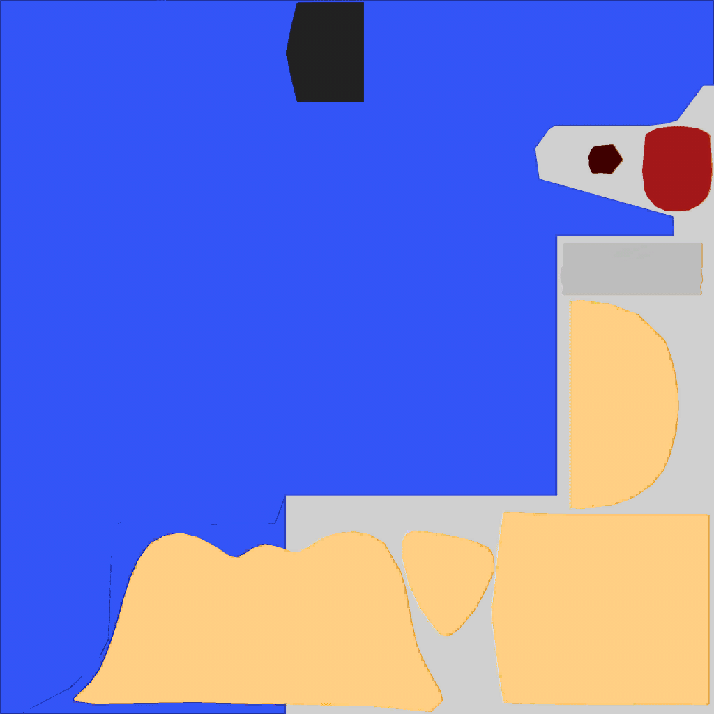
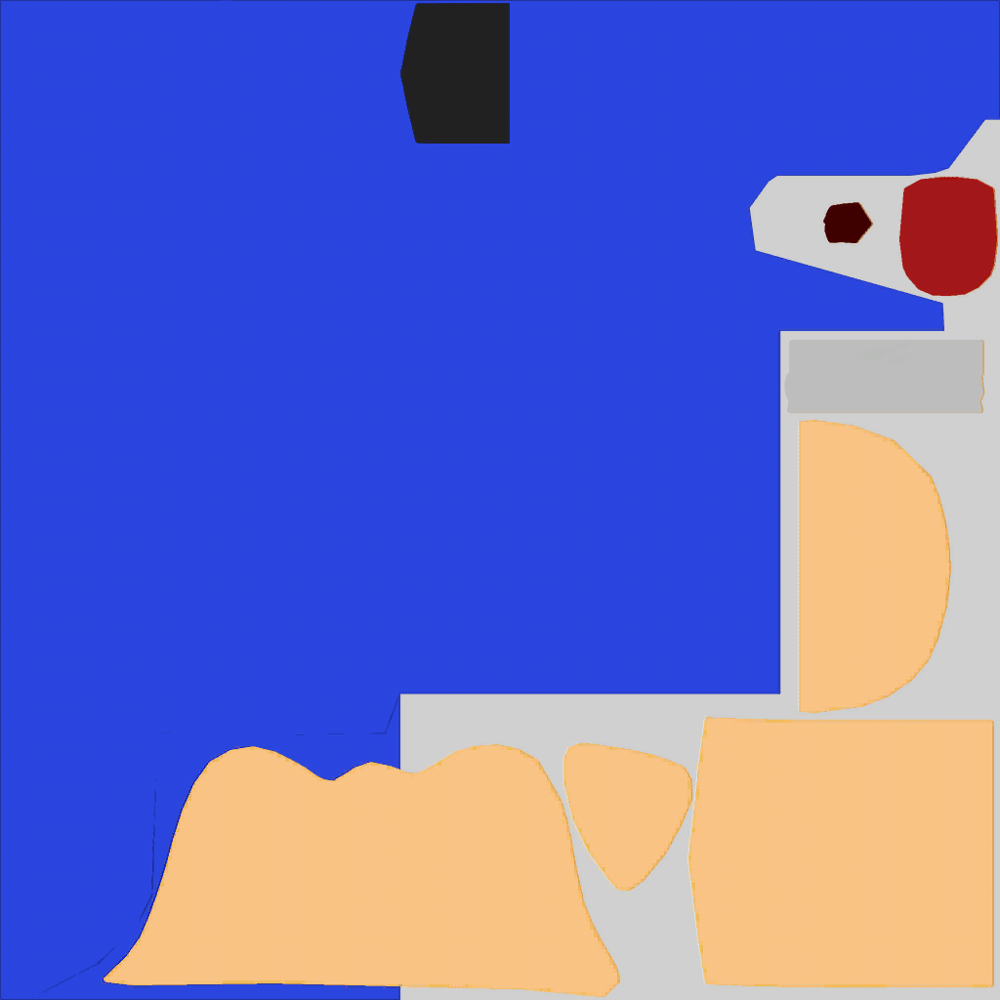

Miscellaneous information, facts, and trivia about Sonic 4.
Sonic the Hedgehog 4: Episode I
The game wasn't initially meant to be a mainline Sonic game, but a spin-off title known as "Sonic the Portable". The ferris wheel in Casino Street Zone in the background retains the name.
Sonic's model in the Windows Phone and older versions of the iOS version is different; it's based on the Sonic Rush Adventure model.
Sonic's model (the high-res model specifically) in the Android port (writer's note: I'll have to check the updated iOS version at some point) is higher quality than the other ports.
Sonic always turns to the right when doing his idle animation.
The music in the Wii version is different than the other ports.
Sonic's body texture in the PlayStation 3 port is darker than his body texture in the Windows and Xbox 360 ports. 